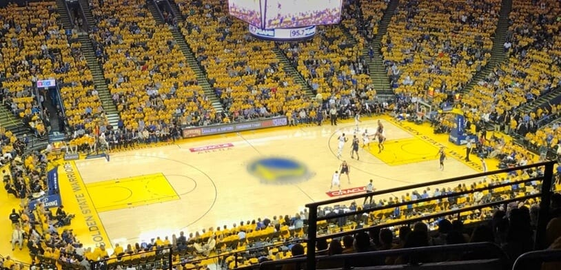

Golden State Warriors - Fundado em 1946, o Golden State Warriors é uma das franquias mais bem-sucedidas da NBA, com um histórico de títulos e uma revolução no estilo de jogo moderno, com ênfase em arremessos de longa distância. Sob a liderança de Steve Kerr e com estrelas como Stephen Curry, Klay Thompson e Draymond Green, os Warriors se tornaram uma das equipes mais dominantes do século XXI, conquistando múltiplos títulos da NBA, incluindo um período de grande sucesso na última década.
Elenco - Stephen Curry (#30), Klay Thompson (#11), Draymond Green (#23), Kevon Looney (#5), Andrew Wiggins (#22), Moses Moody (#4), Chris Paul (#3), Gary Payton II (#8), Jonathan Kuminga (#00), Brandon Payne (#31).
Títulos NBA - 7 (1947, 1956, 1975, 2015, 2017, 2018, 2022)
Títulos Conferência - 7 (1948, 1975, 2015, 2016, 2017, 2018, 2022)
Estádio - Chase Center (18.064)
